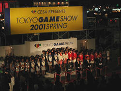
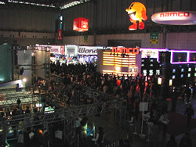
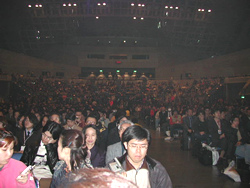
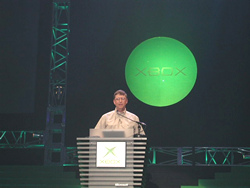
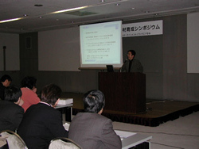

2001年3月30日
【速報】「東京ゲームショウ2001春」開幕！

河本氏とCESA役員によるテープカット
通算10回目にして、21世紀初のゲームショウが、3月30日（金）から千葉・幕張メッセにて開幕しました。 9時から行われた開会式では、社団法人コンピュータエンターテインメントソフトウェア協会（CESA )副会長・辻本憲三、来賓の経済産業省商務情報政策局文化情報関連産業課課長補佐・河本健一氏による挨拶の後、開会宣言とテープカットが行われました。
今回は春休みということもあり、午前中はビジネスタイムとして関係者に向け公開。12時30分からは一般客にも公開されました。ニューハードや最新のソフトウェアが初公開されるなど注目度も高く、会場内では海外の報道陣の姿も目立っていました

関係者で賑わうビジネスタイム
本日午後1時からの米国マイクロソフト社・会長兼チーフソフトウェアアーキテクト ビル・ゲイツ氏の基調講演は特に注目度も高く、午前中から入場を待つ長い順番待ちの行列ができていました。満員の来場者が見守るなかステージに立ったゲイツ氏は、新ハード・Xboxの魅力をさまざまな角度から解説。日本市場だけで発売される特別コントローラや、開発中ソフトのデモを披露するなど、数々のプレゼンテーションは大盛況でした。
途中、株式会社セガの特別顧問・香山哲氏、NTTコミュニケーションズ株式会社代表取締役・鈴木正誠氏なども登場し、セガのXboxへの正式参入や、NTTコミュニケーションズとXboxとの提携などが発表されました。
そしてゲイツ氏は、先日亡くなったセガ会長・大川功氏への弔意を表明した後、「Xboxには、初代Windowsを開発した時と同じ興奮を味わっています」と語って講演を締めくくりました。

満席の基調講演会場

カジュアルなスタイルで登場したゲイツ氏
国際会議場では午後2時30分より、2つのシンポジウムが開催されました。 1つは「教育機関のための第7回CESA人材育成シンポジウム」。現在のゲーム業界の最新動向と将来への方向性について、株式会社フーム代表取締役・福井美行氏の基調講演が行われた後、プログラマー／デザイナーの育成文科会が行われました。 もう1つは「知的財産シンポジウム」。ビジネスモデル特許、Napstar判決、そして中古ゲームソフト問題について、弁理士・松倉秀実氏と社団法人コンピュータソフトウェア著作権協会専務理事・久保田裕氏が講演を行いました。

熱心に聴き入る参加者
初日の来場者総数は3万4329人。31日と4月1日は、一層の盛り上がりが期待されます。皆様ぜひお越しください。
｜
3月 31日>>
|
4月1日>>
｜
掲載された画像その他の内容の無断転載はお断りいたします。
当ホームページで公開された商品名は一般に各社の登録商標です。